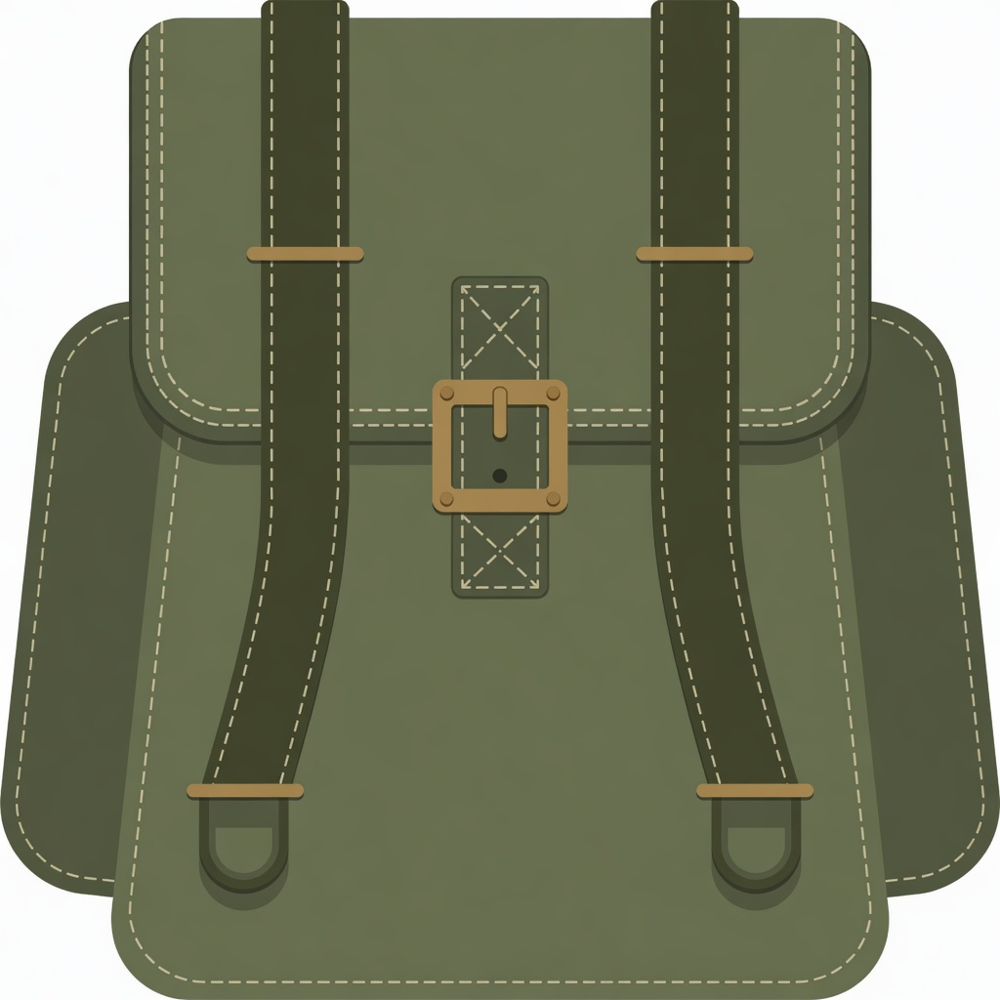

No sale
We are not selling RUCK. There is no ICO, no founder allocation, and no team wallet in genesis. If someone DMs you a “presale,” it is not us.
Independent chain · Bitcoin lineage · Ravencoin asset layer
RuckCoin (RUCK) is a mineable cryptocurrency. Coins are created when someone finds a block — not when we hold a sale. It can also carry named assets: tickets, memberships, unique items.
The social aim is to support veterans in the open: one published address after launch, optional donations, public outflows. Not a hidden pile of coins, and not a tax on every payment.

Three things that will not change
We are not selling RUCK. There is no ICO, no founder allocation, and no team wallet in genesis. If someone DMs you a “presale,” it is not us.
This is a new network, not a Ravencoin split. RUCK addresses start with K. RVN addresses start with R. Never send one coin to the other address.
No cut of every payment. After launch: one address on this site, an optional donate line in the official wallet, and a public list of where the money went.
Why mine
Mining is how RUCK comes into existence. An exchange listing is how people can later trade those coins for other money. Without a place to trade, a mineable coin stays a notebook on your computer.
After official height-0 launch, the project will apply and follow up with exchanges (centralized and decentralized). That work is on the calendar as Phase 5. It is the path we intend to take so mined RUCK can be traded.
A listing is the exchange’s decision, not a consensus rule. We will not name an exchange, a date, or a price. Nobody should buy “RUCK” from us. There is no sale.
The chain you can join today is a test. Those coins will be wiped. Mining it is practice. Value, if any, starts after the public reset and only if a real market appears.
If you have never used a coin like this
A computer solves a hard puzzle about once a minute. The winner writes the next page of the notebook and receives 5,000 new RUCK. That is the only way new coins appear. After official launch we will push to list those coins on exchanges so they can be traded.
A wallet on your computer stores the keys. If you lose the keys, the coins are gone. We cannot reset a password for you.
Sending RUCK is like sending cash on a public notebook. Issuing an asset (a name like TICKET) costs a fixed burn so names stay scarce.
A private test chain already works. Those test coins do not become the public supply. When we open the network, everyone starts even.
March route
Independent network, mining, a send, and a test asset. Names people see now say RuckCoin.
The public record: what the coin is, what it is not, and the calendar.
Receive, send, assets, optional veterans donate, and a simple explorer.
Published start time, binaries, no premine. Then we push for exchange listings so mined RUCK can trade. Extra servers if people actually mine.
Current status. A public test is open so you can run a node, use the wallet, and mine. Test coins are not the public supply and will not carry over. No listing and no official price today. After official launch we will push to get RUCK onto exchanges. No veterans address yet. Connect: addnode=seed.ruckcoin.org:8867. Start here: Windows / Linux / Mac. Source: github.com/madeagle100/RuckCoin.